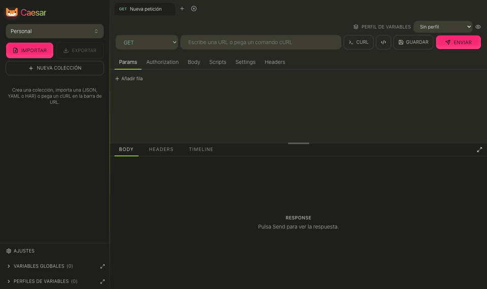

Startseite › Funktionsleitfaden
Caesar-Leitfaden: alle Funktionen, eine nach der anderen
Caesar ist ein Desktop-API-Client, gebaut für Geschwindigkeit: Er startet sofort, hält alles auf deinem Rechner und verlangt zum Einstieg kein Konto. Dieser Leitfaden führt dich mit einem GIF des echten Ergebnisses durch jede Funktion, von deiner ersten Anfrage bis zu Tests, GraphQL, WebSockets und Teamarbeit.
Was ist Caesar?
Caesar ist ein Desktop-API-Client für Windows, macOS und Linux. Mit ihm baust, sendest und testest du HTTP-Anfragen, GraphQL und WebSocket, ordnest sie in Collections und teilst sie mit deinem Team, alles in einer aufgeräumten Oberfläche, in der Farbe und Tastatur dir Klicks sparen.
- Local-First: Im Gastmodus liegen deine Collections auf deinem Gerät. Es funktioniert offline und ohne Konto.
- Wirklich schnell: Es ist mit Rust und Tauri gebaut, nicht mit einem mitgelieferten Browser.
- Vertraut: Wenn du von einem anderen API-Client kommst, kannst du deine Collections importieren, und deine
pm.*-Skripte funktionieren weiter. - Fair Source (FSL): Der Code ist öffentlich und frei nutzbar. Er ist nicht Open Source: Der Verkauf ist untersagt.
Für wen ist es? Für alle, die täglich APIs testen (Backend, Frontend, QA, Mobile) und ein leichtes, privates, reibungsloses Werkzeug wollen. Auch für alle, die Collections mit ihrem Team teilen müssen, ohne Infrastruktur aufzusetzen.
Warum es so schnell ist
Caesars Geschwindigkeit ist kein Trick: Sie kommt aus der Bauweise.
Caesar installieren
Lade den Installer für dein System von der Download-Seite oder aus deinem App-Store herunter:
| System | Datei / Store |
|---|---|
| Windows | 64-Bit-.exe-Installer (auch .msi) · Bald im Microsoft Store |
| macOS (Intel und Apple Silicon) | Universelle .dmg, von Apple signiert und notarisiert |
| Ubuntu (Snap Store) | sudo snap install caesar oder über das Ubuntu App Center (Snap Store) |
| Linux | .deb (Debian/Ubuntu) oder AppImage (jede Distribution) |
Beim ersten Mal kann eine Systemwarnung erscheinen, vor allem unter Windows (SmartScreen). Das ist bei einem neuen Projekt normal, und der Warnhinweis-Leitfaden erklärt, worauf du klicken musst. Danach aktualisiert sich Caesar selbst.
Keine Kommandozeile. Caesar ist eine Desktop-Anwendung: Du brauchst weder Node noch Docker noch irgendeine zusätzliche Installation.
Deine erste Anfrage
Öffne Caesar und klicke auf Neuer Tab (Ctrl+T). Wähle die Methode (GET, POST, PUT, PATCH, DELETE, HEAD oder OPTIONS), tippe die URL ein und klicke auf Senden oder drücke Ctrl+Enter.
- Tippe die URL in die obere Leiste.
- Klicke auf Senden. Du siehst eine Animation der Schritte der Anfrage (Namen auflösen, verbinden, senden, empfangen).
- Lies unten die Antwort: Status, Zeit, Größe und Body.
- Drücke Ctrl+S, um sie in einer Collection zu speichern.

Zusätzlich zu den sieben üblichen Methoden kannst du in den Einstellungen weitere Methoden hinzufügen (zum Beispiel die von WebDAV). Nur CONNECT und TRACE werden abgelehnt.
Parameter und Header
Die Tabs Params und Headers nutzen einen Key/Value-Editor: Du fügst Zeilen hinzu, schaltest sie per Checkbox ein oder aus, ohne sie zu löschen, und die URL aktualisiert sich von selbst.

- Entferne den Haken bei einer Zeile, um ohne sie zu testen, ohne sie zu verlieren.
- Du kannst
{{variables}}in Schlüsseln und Werten verwenden (siehe Variablen und Profile). - Wenn du eine URL mit
?a=1&b=2einfügst, erscheinen die Parameter in ihrer Tabelle.
Request-Body
Im Tab Body wählst du das Format, das deine API braucht:
| Typ | Wann verwenden |
|---|---|
| JSON | Moderne REST-APIs. Editor mit Syntaxprüfung und Farben. |
| Text | XML, Klartext oder anderer Rohinhalt. |
| Form-data | Formulare mit Dateianhängen (bis zu 100 MB pro Datei). |
| x-www-form-urlencoded | Klassische Formulare. |
| GraphQL | Eigener Editor für Query und Variables (siehe GraphQL). |

Aus Sicherheitsgründen hängt Caesar nur Dateien an, die du im System-Dateiauswahldialog ausgewählt hast.
Die Antwort lesen
Die Antwort wird mit dem Status (farbcodiert), der Zeit und der Größe sowie drei Ansichten angezeigt:
- Pretty: formatiertes, farbiges JSON. Du kannst leere Werte ausblenden, um es besser zu lesen.
- Raw: der Text genau so, wie er angekommen ist.
- Timeline: die Schritte der Anfrage mit ihrer Dauer.
Mit dem JSONPath-Filter behältst du nur den Teil, der dich interessiert, zum Beispiel $.data[0].id. Und mit Ctrl+F durchsuchst du die Antwort (siehe Tabs und Suche).
Antworten werden bis zu 10 MB gelesen; ist eine größer, kürzt Caesar sie und warnt dich, damit das Fenster nicht einfriert.
cURL einfügen und kopieren
Wenn dir jemand einen curl-Befehl gibt (aus der Dokumentation einer API, aus den Entwicklertools des Browsers oder von einer Kollegin), füge ihn direkt in die URL-Leiste ein. Caesar erstellt die Anfrage mit Methode, Headern und Body.

Und umgekehrt: Kopiere jede Anfrage als cURL, um sie in einem Ticket zu teilen oder in einem Terminal auszuführen. Dafür gibt es einen Befehl (kein Standard-Tastenkürzel, du kannst eins zuweisen).
Authentifizierung
Im Tab Authorization wählst du, wie du dich ausweist. Caesar unterstützt diese Typen:

Die Option Inherit ist die bequemste: Du definierst die Authentifizierung einmal an der Collection oder am Ordner, und jede Anfrage darin verwendet sie. Ändert sich das Token, änderst du es an einer einzigen Stelle.
Tipp: Speichere das Token in einer Variable ({{token}}) und nutze diese Variable in der Authentifizierung; so musst du es nicht in jede Anfrage einfügen.
Variablen und Profile
Mit Variablen schreibst du {{baseUrl}} statt einer festen URL. Es gibt drei Ebenen:
- Globale Variablen: gelten in all deinen Collections.
- Collection-Variablen: nur für diese Collection oder diesen Ordner.
- Variablenprofile: benannte Sets (Development, Staging, Production ...), die du mit der Auswahl neben Senden aktivierst.

{{x}}-Variablen werden in URL, Headern, Parametern und Authentifizierung in einer anderen Farbe angezeigt, sodass dir keine durchrutscht.- Ctrl+Klick auf eine Variable öffnet ihren Wert zum Ansehen und Bearbeiten, ohne die Anfrage zu verlassen.
- Ctrl+Leertaste öffnet die Variablenauswahl.
- Du kannst Variablen als geheim markieren, damit sie nicht auf einen Blick sichtbar sind.
- Wenn du eine Collection mit Environments importierst, werden diese zu Profilen und ihre Globals zu globalen Variablen.
Tests und Skripte
Der Tab Scripts führt ein Skript aus, wenn die Antwort eintrifft (die Ergebnisse erscheinen in einem Tab des Antwortbereichs). Er verwendet eine vertraute Syntax (pm.*), sodass dein vorhandenes Wissen weiter gilt:
pm.test("responds 200", () => {
pm.expect(pm.response.code).to.equal(200);
});
const data = pm.response.json();
pm.test("returns users", () => {
pm.expect(data.length).to.be.above(0);
});
pm.testundpm.expect, um Status, Header und Body zu prüfen.pm.response.json(), um den bereits geparsten Body zu lesen.pm.environment.set,pm.collectionVariables.setundpm.globals.set, um Werte zu speichern.
Von Grund auf sicher. Skripte laufen in einem eigenen Interpreter für eine JavaScript-Teilmenge: kein Netzwerk, kein Dateisystemzugriff und kein eval. Deshalb kann ein importiertes Skript nichts außerhalb seines eigenen Bereichs tun.
Anfragen verketten
Ein typischer Fall: anmelden und das Token in den anderen Anfragen verwenden. Mit einem Test in der Login-Anfrage:
const r = pm.response.json();
pm.environment.set("token", r.access_token);Von da an kann jede Anfrage {{token}} in ihrem Header oder in der Bearer-Authentifizierung verwenden. Du führst den Login einmal aus, und der Rest ist authentifiziert, ganz ohne Kopieren und Einfügen.
Collections und Ordner
Collections sind das Notizbuch, in dem du deine Anfragen aufbewahrst. Erstelle eine in der Seitenleiste, lege Ordner in Ordnern an und ordne per Drag-and-drop neu.

- Jede Collection oder jeder Ordner kann eigene Variablen und eine eigene Autorisierung haben, die von allem Enthaltenen geerbt werden.
- Es speichert sich selbst: Caesar speichert automatisch und behält deine Tabs und Entwürfe, wenn du es schließt.
- Du kannst eine Collection mit deinem Team teilen (siehe Synchronisierung und Teams).
Import und Export
Du fängst nicht bei null an. Caesar importiert, was du schon hast, und exportiert, wann immer du willst:
| Format | Import | Export |
|---|---|---|
| Andere API-Clients (v2.1-Collections und Environments) | Ja | Ja (JSON) |
| Andere API-Clients (JSON-Exporte) | Ja | – |
| Caesar JSON | Ja | Ja |
| YAML | Ja | Ja |
| HAR (aus dem Browser) | Ja | Ja |
| cURL | In die URL-Leiste einfügen | Als cURL kopieren |

Bevor du eine Collection teilst, kann Caesar ein Backup erstellen, damit du nichts verlierst.
Code-Generator
Mit der Schaltfläche </> verwandelst du die aktive Anfrage in Code, den du direkt in dein Projekt einfügen kannst. Es gibt 20 Sprachen und Bibliotheken, darunter cURL, Python (Requests), JavaScript (Fetch, XHR), Node.js (Axios), Go, Rust, Java, Kotlin, C#, PHP, Ruby, PowerShell, Swift und Dart.

Du kannst Optionen wie Einrückung, Timeout oder das Folgen von Weiterleitungen anpassen und das Ergebnis mit einem Klick kopieren.
GraphQL
Wähle den GraphQL-Body, und Caesar gibt dir einen Query-Editor und einen weiteren für Variables:
- Schema laden per Introspection.
- Autovervollständigung für Felder und Typen beim Tippen.
- Schema-Explorer, um Typen und Felder zu durchsuchen.
- Beautify, um die Query zu formatieren.
- Variablen generieren aus der Query und eine Operationsauswahl, wenn es mehrere gibt.

GraphQL-Anfragen werden im Standardformat für Collections importiert und exportiert.
WebSockets
Erstelle eine WebSocket-Anfrage, verbinde dich und verfolge die Unterhaltung in einer Timeline: was du sendest und was du empfängst, mit Zeit und Größe.

- Schreibe die URL mit
ws://oderwss://(wenn duhttp(s)verwendest, wird sie umgewandelt). - Du kannst Subprotokolle durch Kommas getrennt festlegen.
- Sende Text- oder Binärnachrichten (hexadezimal oder base64) und untersuche Binärdaten in einem Hexdump.
- Unterstützt
{{variables}}in der URL.
Tabs und Suche
Arbeite mit so vielen Tabs, wie du brauchst. Caesar merkt sich die geöffneten und stellt sie beim nächsten Start genau so wieder her, wie sie waren.

- Ctrl+T neu, Ctrl+W schließen, Ctrl+1…9 zu Tab N springen.
- Alt+← / → springt zurück zum Tab, den du davor oder danach besucht hast.
- Ctrl+F sucht in der Antwort oder im Editor.
- Rechtsklick oder Ctrl+Shift+W schließt alle und bringt dich zum Startbildschirm mit der Katze.
Unter macOS wird Ctrl durch Cmd ersetzt.
Workspaces
Ein Workspace ist ein eigenständiger Satz aus Collections, Variablen und Tabs: einer für die Arbeit, einer für private Projekte, einer pro Kunde. Du wechselst über die Auswahl in der Seitenleiste.

Der Gastmodus und Konten ohne Pro enthalten einen Workspace; mit Pro kannst du so viele haben, wie du willst.
Tastenkürzel
Jeder Caesar-Befehl hat ein Tastenkürzel, und du kannst alle ändern. Öffne den Editor mit Ctrl+/.

| Aktion | Standard-Tastenkürzel |
|---|---|
| Anfrage senden | Ctrl+Enter |
| In der Collection speichern | Ctrl+S |
| Neuer Tab / Tab schließen | Ctrl+T / Ctrl+W |
| Zur URL-Leiste springen | Ctrl+L |
| Suchen | Ctrl+F |
| Variable auswählen | Ctrl+Leertaste |
| Einstellungen öffnen | Ctrl+, |
| Tastenkürzel ansehen und bearbeiten | Ctrl+/ |
Du kannst auch eigene Aktionen erstellen, die mehrere Befehle verketten, und Schaltflächen deiner Wahl neben der URL platzieren.
Themes, Schriftarten und Sprachen
Caesar wird mit sechs Themes geliefert: Monokai (Standard), Dracula, Tokyo Night, Nord, One Dark und GitHub Light für alle, die einen hellen Hintergrund bevorzugen.

Du kannst auch Schriftart und Textgröße wählen, Animationen ausschalten und die Breite der Seitenleiste anpassen. Die Oberfläche ist auf Spanisch, Englisch, Deutsch, Französisch und Italienisch verfügbar.
Netzwerkeinstellungen
In den Einstellungen steuerst du, wie Anfragen gesendet werden:
| Einstellung | Was sie bewirkt |
|---|---|
| Weiterleitungen folgen | Folgt bis zu 10 Weiterleitungen oder keiner. |
| Timeout | Standardmäßig 30 Sekunden. Bei 0 oder mehr als 1 Stunde gilt das Maximum von 3600 s, nützlich zum Debuggen, ohne dass der Fehler dazwischenfunkt. |
| SSL prüfen | Schalte es nur aus, um Server mit selbstsignierten Zertifikaten zu testen. |
| HTTP-Version | Automatisch, HTTP/1.1 oder HTTP/2. |
| Zusätzliche Methoden | Fügt benutzerdefinierte Methoden zu den üblichen hinzu. |
Synchronisierung und Teams
Mit einem Pro-Konto kannst du dieselben Collections auf mehreren Rechnern nutzen und mit anderen Personen teilen.
- Persönliche Synchronisierung: Deine Collections, Variablen und Profile erscheinen auf all deinen Geräten. Änderungen werden pro Element zusammengeführt, sodass zwei Geräte sich gegenseitig nichts überschreiben.
- Auf deinem Gerät verschlüsselt: Was hochgeladen wird, ist bereits auf deinem Computer verschlüsselt; der Dienst speichert nur unlesbare Daten.
- Wiederherstellungsschlüssel: Du bewahrst ihn auf, und er lässt dich deine Daten wiederherstellen, falls du ein Gerät verlierst.
- Neues Gerät verknüpfen: Es wird von einem anderen deiner Geräte aus mit einem sechsstelligen Code genehmigt, den du auf beiden Bildschirmen vergleichst.
- Teams: Teile eine Collection oder einen Workspace mit einem Code; wer ihn eingibt, tritt bei und sieht die Änderungen.

Wichtig: In einer geteilten Collection kann jeder mit dem Code den Inhalt lesen und ändern; es gibt keine Rollen. Teile den Code nur mit Personen, die bearbeiten dürfen sollen.
Gast, Konto und Pro
| Modus | Enthält |
|---|---|
| Gast (kostenlos) | Alle Anfragefunktionen, Tests, GraphQL, WebSockets, Import/Export und Code-Generator. Daten nur auf deinem Gerät, 1 Workspace. |
| Konto (7 Tage Testphase) | Wie Gast, lokal, während du entscheidest, ob du Pro aktivieren willst. Nach 7 Tagen ohne Pro wird das Konto gelöscht. |
| Pro (Abonnement) | Verschlüsselte Synchronisierung, Teams und geteilte Collections sowie unbegrenzte Workspaces. |
Preis, Abrechnungszeitraum und Steuern werden vor der Zahlung auf der Checkout-Seite angezeigt. Du kannst jederzeit unter Einstellungen → Konto und Abonnement → Abonnement verwalten kündigen und erhältst innerhalb von 14 Tagen eine Rückerstattung. Mehr Details unter Preise und Abonnement.
Datenschutz und Sicherheit
- Keine Telemetrie, keine Analytics. Caesar sendet keine Nutzungsdaten.
- Die Oberfläche stellt keine Netzwerkanfragen: Sie werden vom Rust-Kern ausgeführt, der URLs validiert, nur http und https zulässt und die Größe von Antworten und Dateien begrenzt.
- Deine Schlüssel verlassen nie das System: Der Verschlüsselungsschlüssel liegt im Schlüsselbund deines Betriebssystems.
- Minimale Berechtigungen und eine strikte Sicherheitsrichtlinie in der Anwendung.
- Im Gastmodus verlassen deine Daten nie dein Gerät.
Mehr unter Sicherheit und Datenschutz und in der Datenschutzerklärung.
Updates
Caesar aktualisiert sich selbst: Beim Start sucht es nach einer neuen Version und lädt sie, falls vorhanden, herunter, installiert sie und startet neu. Deine Tabs und Entwürfe bleiben erhalten. Jedes Paket ist signiert, und die Anwendung prüft die Signatur vor der Installation.
- Unter Einstellungen → Updates kannst du sie ausschalten oder auf Nach Updates suchen klicken.
- Wenn du Caesar unter Linux aus dem Snap Store installierst (
sudo snap install caesaroder das Ubuntu App Center), aktualisiert Snap es automatisch; beim AppImage aktualisiert es sich in der App, und das.debwird manuell neu installiert.
Best Practices
- Nutze Variablen für alles, was sich ändert (Server, Version, Tokens) und Profile für jede Umgebung.
- Definiere die Authentifizierung an der Collection und lass Anfragen auf „Inherit“.
- Füge jeder wichtigen Anfrage mindestens einen Test hinzu: Status und eine Body-Prüfung.
- Benenne Anfragen mit Verb und Ressource („List users“, „Create order“) und gruppiere sie in Ordnern.
- Exportiere von Zeit zu Zeit eine Kopie deiner wichtigen Collections.
- Lass keine Secrets in der URL: nutze geheime Variablen oder die Authentifizierung.
- Nutze einen Workspace pro Projekt oder Kunde, damit sich Variablen nicht vermischen.
Fehlerbehebung
Die Anfrage verbindet sich nicht
Prüfe, ob die URL mit http:// oder https:// beginnt, ob keine unaufgelöste Variable vorhanden ist (sie wird in einer anderen Farbe angezeigt) und ob du eine Verbindung hast. Sieh dir die Timeline der Antwort an: Sie zeigt dir, welcher Schritt fehlschlägt.
SSL-Zertifikatsfehler
Wenn du einen lokalen Server mit selbstsigniertem Zertifikat testest, schalte in den Einstellungen SSL prüfen aus. Schalte es für echte APIs wieder ein.
Ich bekomme 401 oder 403
Prüfe den Tab Authorization: Steht er auf „Inherit“, prüfe den der Collection. Vergewissere dich, dass das Token nicht abgelaufen ist und die Variable im aktiven Profil existiert.
Die Anfrage läuft in ein Timeout
Erhöhe das Timeout in den Einstellungen. Bei 0 gilt das Maximum (1 Stunde), gedacht zum Debuggen.
Meine Tests tun nichts
Tests laufen, nachdem die Antwort eingetroffen ist, du musst die Anfrage also senden. Gibt es einen Fehler im Skript, wird er neben den Ergebnissen angezeigt.
Ich kann nicht synchronisieren oder teilen
Diese Funktionen erfordern Pro. Im Gastmodus oder mit dem Konto in der Testphase arbeitet Caesar lokal. Wenn du bereits bezahlt hast, klicke unter Konto und Abonnement auf Ich habe bereits bezahlt, prüfen.
Häufig gestellte Fragen
Eignet sich Caesar zum Testen von APIs?
Ja: Es deckt REST, GraphQL und WebSocket ab, mit Tests, Variablen, Profilen, Collection-Import und Code-Generierung, in einer leichten App, die offline funktioniert.
Ist es kostenlos und Open Source?
Es ist im Gastmodus kostenlos und sein Code ist öffentlich, aber es ist nicht Open Source: Es verwendet die FSL-Lizenz, und der Verkauf ist untersagt. Jede Version wird nach zwei Jahren zu MIT.
Wo werden meine Collections gespeichert?
Auf deinem Gerät. Sie verlassen es nur, wenn du die Synchronisierung einschaltest oder mit einem Team teilst, und dann sind sie verschlüsselt.
Kann ich meine Collections aus einem anderen API-Client mitbringen?
Ja. Importiere die Collection-Datei (und die Environments, die zu Profilen werden) über die Seitenleiste.
Funktionieren meine vorhandenen Skripte?
Tests mit pm.test, pm.expect, pm.response.json() und die Funktionen zum Speichern von Variablen funktionieren. Caesar nutzt einen sicheren Interpreter für eine JavaScript-Teilmenge, daher läuft ein Skript, das von externen Bibliotheken oder dem Netzwerk abhängt, nicht.
Gibt es eine Kommandozeile oder CI-Integration?
Derzeit ist Caesar eine Desktop-Anwendung. Du kannst Anfragen als cURL oder Code exportieren, um sie in deinen Skripten zu verwenden.
Brauche ich ein Konto?
Nein. Ein Konto ist nur nötig, um zu synchronisieren und im Team zu arbeiten.
Auf welchen Systemen läuft es?
Windows (.exe und .msi; bald im Microsoft Store), macOS (Intel und Apple Silicon) und Linux (Ubuntu App Center / Snap Store mit sudo snap install caesar, .deb und AppImage).
Jetzt ausprobieren
Der Download ist kostenlos, und du brauchst kein Konto. Wenn etwas fehlt oder du einen Fehler findest, sag uns Bescheid auf GitHub.